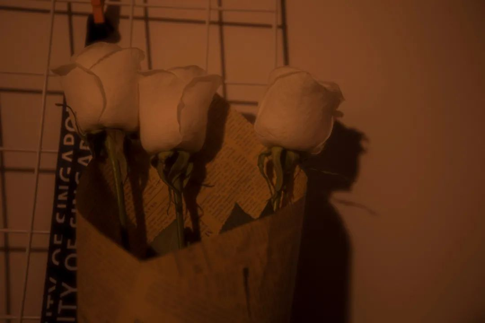

本文是张衔瑜第176篇推文
共计588个字，1张图
问国内的朋友
“冻到手脚冰凉，是什么感觉？”
有人最近在看场面很宏大的电影，反复诵记着拯救世界的台词。相机从关到开，有拨杆“嗒”地一声，朋友说这是在为每一个死在沙滩上的浪花超度。
不止是现在，很多次我看朋友的自拍，看起来都像是早上没睡醒抱着一肚子起床气；又或者是一个人在吃饭，旁边一个人走过，自己嚼着满口的食物在抬头的刹那和路人对视的那一眼被拍了下来
所以有标题，这不是回笼觉，而是猪笼觉。
有人喝了酒之后终于说了真话：“你才是初恋，那些人都是彩排”
得空的时候，我把《大象席地而坐》的原盘转成了音频。看过了之后，我都能想到是什么场景。可惜不懂《四重奏》的语言。井陉县的灰暗就像是说：每天的生活都很单调，起床然后受苦。音频不错的，Schindler’s List也可以这样转白噪音，方便的是能听懂。
在半熟的时候把菜就盛了出来，尝了味道，然后后悔为什么没做熟它，最后倒掉。
二零零九年十月十六日事件 CD2
第三首是老狼、万晓利和南京市民一起唱的。最后市民问老狼和万晓利
少看一些奇怪而夸张的图片。那像是没有白噪的时候加入的刺眼气味，全都是谷氨酸钠
在商场逛着逛着，循气味找到了一层楼的缅甸商店。商店里有印着昂山素季的日历，以及一些我说不出名字的草本草叶。买了一束洋桔梗，令人想起一休哥里的桔梗店老板。缅甸人的生活气息接触起来和其他在新加坡的东南亚人又不一样。
交封
